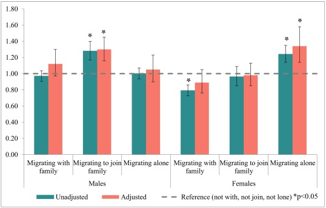

I have published a new paper!! Family networks during migration and risk of non-affective psychosis.
We had a cohort of migrants to Sweden and we looked to see if having family around during migration affected the risk of developing psychotic disorders (like schizophrenia).
What did we find: We found sex-specific patterns, where the presence of family was protective for females but increased risk among males.

It is possible that gendered experiences encountered in the context of immigration may contribute to some of this heterogeneity, and moreover, may underpin some of the excess rates of psychotic disorders amongst immigrant groups.
It is open access, so you can all read the full paper here.. (#FridayNightPlans?)
I will leave you with some pictures of my silly and wonderful family, which have provided me with tons social support (and pestering) over the years.
And with the addition of two adorable ragamuffins.